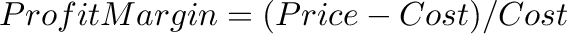
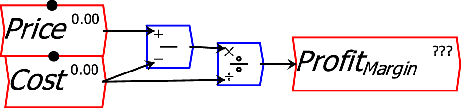
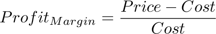

Equations are entered in Ravel graphically. Mathematical operations like addition, multiplication and subtraction are performed by wiring the inputs up to the relevant mathematical block. The output of the block is then the result of the equation.
For example, a simple equation like  is performed in Ravel by : 
If you click on the Equation or Summary Tab, you will see this flowchart rendered as an equation:

If the variables Price and Cost were multi-dimensional--if, for example, they stored price and cost data for different products at different stores at different dates--then this one formula would calculate profit margins by product by store by date.